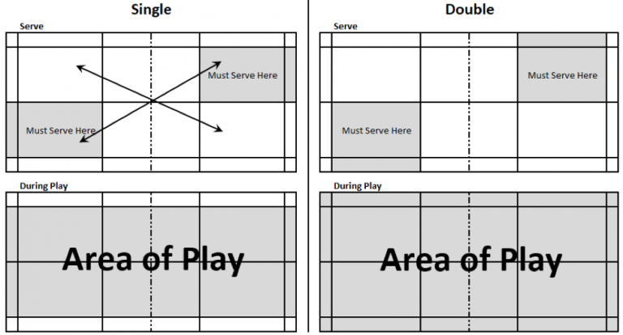

Badminton has many intricate rules and regulations. The Badminton World Federation has done a thorough job of compiling these rules and laying them out in an organized manner for you to learn. Check them out along with their vocabulary and simplified badminton rules below.
Below are some basic rules you need to know:
It is important to highlight, there are also different rules or regulations depending on if you are playing singles or doubles. Look at the image below to understand the difference of the service line and area of play between singles and doubles matches.
In singles, a badminton court is 13.41m (44ft) long and 5.18m (17ft) wide. The width extends to 6.1m (20ft) in doubles.
The net is 1.55m (5ft 1in) high at the ends and 1.52m high (5ft) where it dips in the middle.
A serve must pass the short service line, which is 1.98m (6.5ft) from the net.
Beyond the short service line, there is a line which runs down the middle to split the left and right service courts. There is also a doubles service line 0.76m (2.5ft) in from the baseline.
That means each service court (four in total) is 3.96m (13ft) long and 2.59m (8.5ft) wide.